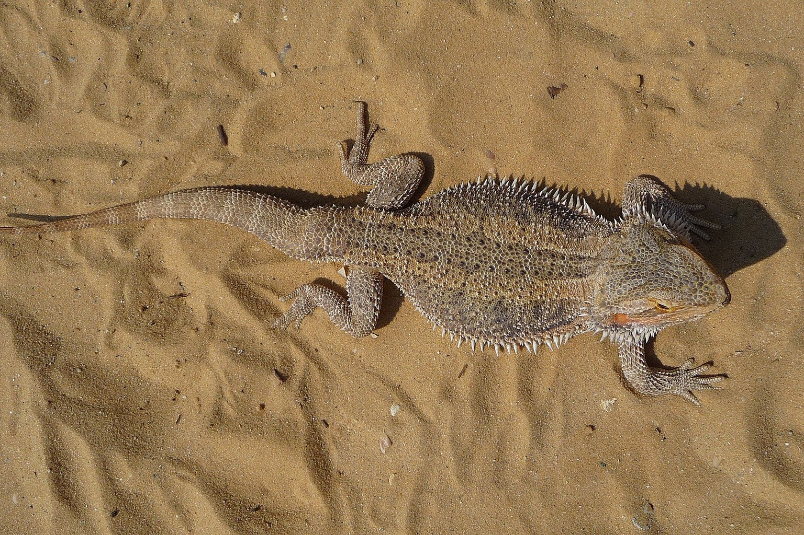

Bearded Dragon Brumation: How to Tell a Normal Slowdown From a Sick Lizard
A bearded dragon that sleeps for ten weeks is following the season. One that sleeps at the wrong temperature is dying slowly, and from outside the glass the two look identical.

At a cool-end floor of 18-24 °C (65-75 °F), a bearded dragon's gut peristalsis slows to near nothing — food sits, ferments and rots in place. That number is the whole difference between brumation and a sick lizard, and the reason "brumation or sick" is the wrong question. The right one is: what has the body temperature been doing for three weeks?
The Dragon That Wasn't Brumating
I got this wrong in November 2021 with a subadult male called Bramble. Two in the afternoon, his cool-end probe read 21 °C, and he had gone flat under his slate hide — chin down, eyes slit, breathing so shallow I had to hold a mirror to his snout. Every November he does this. I put a blanket over half the enclosure, dialled the timer to a 9-hour photoperiod and left him. Three days later his right hind leg dragged when I lifted him out, and his belly was hard. The vet bill was £140 and the fix was two degrees: the cool floor was sitting at 19 °C, not the 22 °C I thought, because the probe was velcroed to the back wall and the slate was taking a draught from a loose window. I bought an infrared gun the same week.
The Three Impostors
Brumation in Pogona vitticeps is a genuine physiological state, not a slow-down from cold. A brumating dragon is lethargic, hides for days and refuses food, but keeps its weight and a soft abdomen — the trigger is shortening photoperiod and falling night temperatures, not an enclosure that happened to get cold. Three other conditions present almost identically, and one is fatal within a fortnight.
Respiratory infection. Bearded dragons have no diaphragm; they inflate the lungs by gulping and using the body wall, so a chest infection shows as laboured throat movement, a click or gasp at rest, and mouth-gaping in an animal that is otherwise "sleeping". Brumation does not produce sound. If you hear a wheeze, book the vet.
Impaction. Swallowed substrate or undigested chitin blocks the gut, and the animal stops eating because the block hurts. A brumating dragon is soft and slightly plump; an impacted one is hard and distended, often on the lower right flank, and strains with nothing coming out. An 18-24 °C cool end makes this worse — the gut stops while the blockage grows.
Metabolic bone disease. Poor UVB or a bad calcium-to-phosphorus ratio drives nutritional secondary hyperparathyroidism: the parathyroids overreact to falling blood calcium, pull it out of bone, and the skeleton weakens from the inside. An animal in early MBD trembles when lifted and may stop bearing weight on one limb. It looks tired because it is spending bone. The clinical target from exotic veterinary practice is roughly 2:1 calcium-to-phosphorus in the insect diet, with dusting as a top-up rather than the main source.
Running the Gradient
You cannot make this call on a wall thermometer, because that measures air and the dragon measures its own skin against a rock. These are the ranges I run.
- Basking surface: 38-42 °C (100-108 °F), read with an infrared gun on the rock. Above 45 °C risks belly burns.
- Warm zone: 30-34 °C (86-93 °F). A sick or recovering animal parks here.
- Cool end: 22-26 °C (72-79 °F). Never below 20 °C at night for an adult; hold juveniles at 24 °C.
- UVB: linear tube at UVI 2-4 at 30 cm from the basking surface, output band 290-315 nm.
- Photoperiod: 12/12 in summer, stepping to 10/14 as the brumation trigger. Hold 12/12 if you are not brumating deliberately.
That is the whole setup. A sick animal pushes itself to the warm end and stays; a brumating animal sits mid-range or in the cool hide and stays. Two thermometers and a gun, read at 8 pm rather than at breakfast, because that is when the temperature has done its worst — the cheapest fix here is a second thermometer.
The enclosure is a small system, not a box. A screen top vents heat faster than a solid one, and loose substrate holds moisture that reads cool and damp under the slate. I keep every adult on slate with a deep dry hide and let the planted clean-up section sit away from the sleeping dragon.
A Decision Chart, Not a Guess
- Weigh it. A healthy adult loses 1-2 % of body weight per month in brumation. A 400 g dragon at 380 g after four weeks is ill, not dormant.
- Read the belly. Soft and plump is fine. Hard, tight or swollen is impaction or infection. Palpate once, gently.
- Gun the cool floor. Below 20 °C this week? Temperature problem first, everything else second.
- Hold 12/12 for three days. Warm end at 40 °C, cool end at 24 °C. A true brumator comes out to bask briefly. A sick one sits under the lamp with its eyes shut.
- Offer food and count. No interest at all for a second week, in a reliable eater, is a red flag rather than brumation.
- Check eyes and nostrils. Clear and dry, or crusty and bubbling. Bubbling means vet.
If the checklist clears, brumation is safe for a healthy adult — but make it deliberate, not weather. I step the photoperiod down in October rather than flipping a timer, because a sudden 12-to-9 drop tips a marginal animal over.
| Symptom | Brumation | Respiratory infection | Impaction |
|---|---|---|---|
| Breathing at rest | Slow, silent, regular | Laboured, clicking, gasping | Normal, shallow if in pain |
| Abdomen on gentle palpation | Soft, plump | Soft, sometimes bloated | Hard, tight, often right flank |
| Weight over 4 weeks (adult, 350-450 g) | Down 1-2 % maximum | Down 5 % or more | Down, or static with visible bulk |
| Response when warmed to 34 °C | Wakes, basks, may eat | Stays flat, may gape or wheeze | Stays flat, strains, passes nothing |
| Preferred floor temperature | 22-26 °C | 30-34 °C, or pressed to glass | Variable; often warm end |
| Eyes and nostrils | Clear, dry | Discharge, bubbling | Clear |
Life Stages and the Small System
Juveniles under about 30 cm total length do not brumate safely — the body stores are too small and the bones are still being built. A juvenile that goes dormant in its first year usually has a UVB or temperature fault. Keep them 12/12 year-round, basking surface 40-42 °C, cool end no lower than 24 °C.
Subadults (roughly 30-45 cm) can take a short, shallow brumation — four to six weeks at 10/14 and a 20 °C night drop — provided they went in at a healthy weight. Adults can do eight to twelve weeks. If your adult lives on superworms and mealworms, the reserves are fat-heavy and calcium-light, so dust the last autumn feeds.
Replace the UVB tube every 12 months even if it still lights. The phosphor that emits in the 290-315 nm band decays long before the visible light fails, and the animal absorbs the calcium only if the UV index is there to drive vitamin D3 synthesis.
Frequently asked questions
My dragon has buried itself and stopped eating — brumation or illness?
Check the cool floor first. Below 20 °C the animal is cold, not brumating, and that is a husbandry problem. If the gradient is right and a healthy adult has lost under 2 % of body weight in a month, it is probably brumation. Any wheeze, over 5 % loss or hard abdomen means a vet call.
Should I wake a brumating dragon to feed it?
No, not routinely. The gut has stopped, and food sitting at 22 °C ferments. Offer live food only if the animal wakes and basks on its own. A healthy adult brumating for eight to twelve weeks does not need a mid-way meal; a thin or juvenile animal should not have been allowed to brumate.
What temperature should I keep a sick or recovering dragon at?
Basking surface 38-40 °C, cool end 26 °C, 12/12 photoperiod, so the animal chooses. Sick dragons push to the warm end, and that fever-seeking behaviour is one of the most reliable signs there is. Do not cool the enclosure to make it comfortable — that is for brumation only.
What we actually use
Two pieces of equipment that do most of the work in a Bearded Dragon setup. Nothing here is here because a brand asked.
-
Check price on AmazonHabitat & Decor
UVB + Heat Lamp Fixture Combo
A brumating dragon still needs its UVB reviewed; a tube past its service life is a common winter mistake.
Typical price $45–75 -
Check price on AmazonHabitat & Decor
Infrared Thermometer Gun
Basking spot measured on the surface the lizard actually uses, not the air above it.
Typical price $18–30
Links open Amazon in a new tab. We do not set or track prices.
Affiliate disclosure. As an Amazon Associate, we earn from qualifying purchases. Every card in this guide is an affiliate link — it costs you nothing, and we only list gear we have run in our own enclosures.